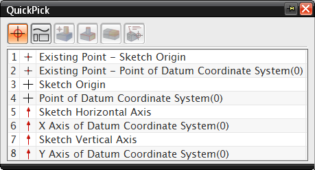

Sketch CSYS naming enhancement
What is it?
The internal sketch coordinate system objects now have the following unique names:
-
Sketch Horizontal Axis
-
Sketch Vertical Axis
-
Sketch Origin, for sketches created with the Associative Origin option selected.
-
Point of Sketch CSYS, for sketches created without the Associative Origin option selected.
These unique names differentiate the sketch CSYS from other datum CSYS that may exist in the same location. When you create sketch curves or constraints to objects on top of another datum CSYS, you can now easily select the object you want using the QuickPick dialog box.

Where do I find it?
Associative Origin option
|
Application |
Modeling, Drafting, Shape Studio, Sheet Metal |
|
Toolbar |
Direct Sketch→Sketch |
|
Menu |
Insert→Sketch |
|
Location in dialog box |
Settings group |